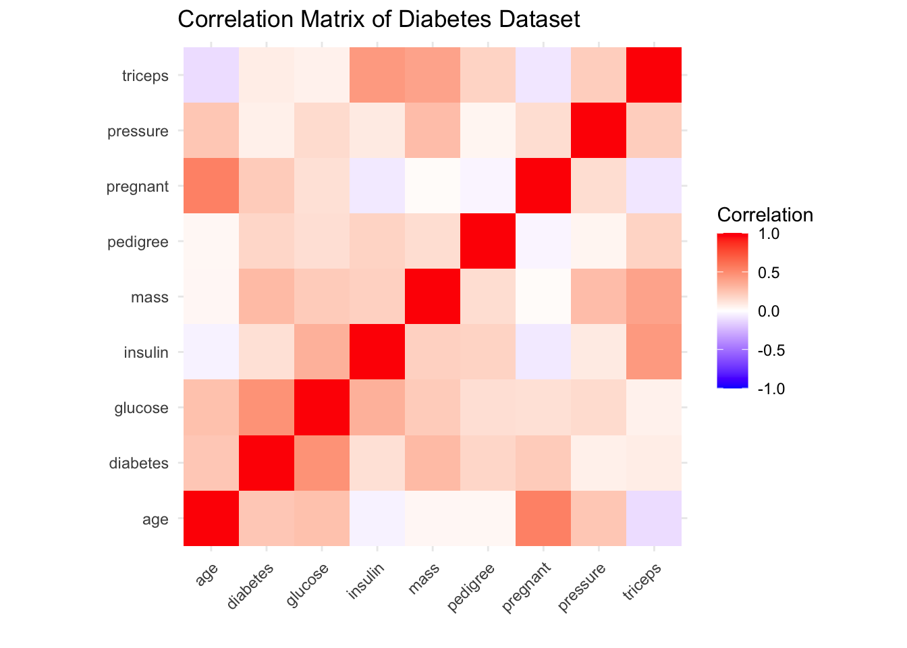
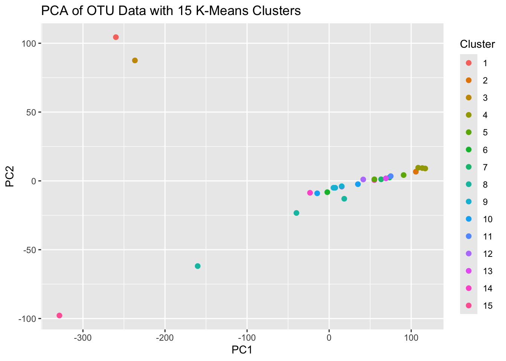
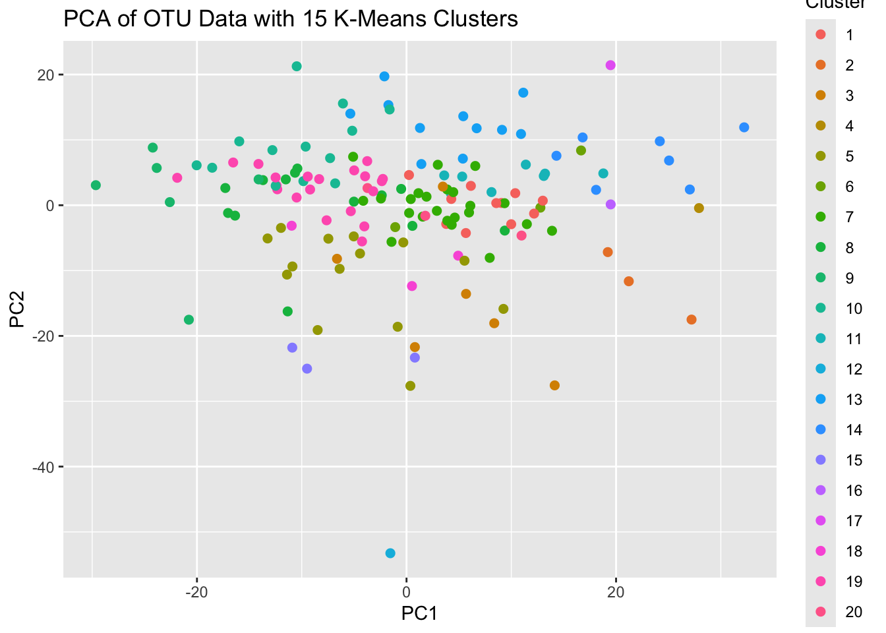
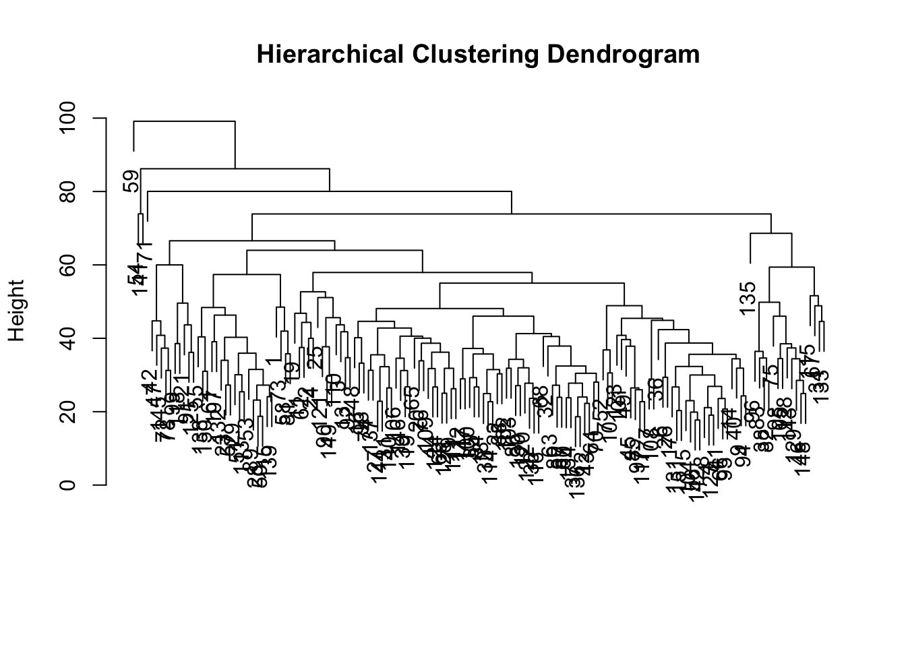
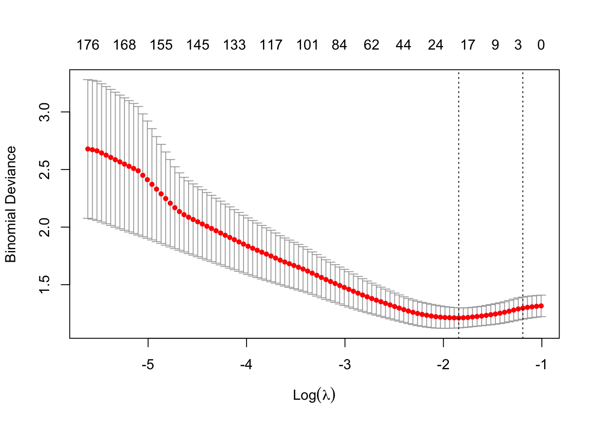

Module 4: Modeling Part 2
Lab
Classification
In this example we’ll be looking at the Pima Indians Diabetes Database collected by the National Institute of Diabetes and Digestive and Kidney Diseases. The dataset contain 768 observations on 9 variables related to the onset of diabetes in women.
Exploratory Data Analysis
diabetes.pc <- diabetes.data %>%
mutate(across(c(where(is.numeric)), ~(.x-mean(.x))/sd(.x))) %>%
dplyr::select(where(is.numeric)) %>%
cor()
diabetes.pc %>%
as.data.frame() %>%
rownames_to_column(var = "Variable_1") %>%
pivot_longer(cols = -Variable_1, names_to = "Variable_2", values_to = "Correlation") %>%
ggplot(., aes(x = Variable_1, y = Variable_2, fill = Correlation)) +
geom_tile() +
scale_fill_gradient2(low = "blue", high = "red", mid = "white",
midpoint = 0, limit = c(-1, 1), space = "Lab",
name = "Correlation") +
theme_minimal() +
theme(axis.text.x = element_text(angle = 45, vjust = 1, hjust = 1)) +
coord_fixed() +
labs(title = "Correlation Matrix of Diabetes Dataset",
x = "",
y = "")
Create Training and Testing Sets
# Split training data into explanatory and response variables
Training.dat <- diabetes.data %>%
slice_sample(prop = 0.75)
Train.X <- Training.dat %>%
dplyr::select(-diabetes) %>%
as.matrix()
Train.Y <- Training.dat %>%
dplyr::select(diabetes) %>%
as.matrix()
# Do the same for the testing data
Testing.dat <- diabetes.data %>%
anti_join(., Training.dat)## Joining with `by = join_by(pregnant, glucose, pressure, triceps,
## insulin, mass, pedigree, age, diabetes)`Fit a Logistic Regression Model
# Fit a Logistic Regression model
logistic.mod <- glm(diabetes ~ ., data = Training.dat, family = "binomial")
# Predict on training and testing sets
logistic.train <- predict(logistic.mod, newdata = Training.dat, type = "response")
logistic.test <- predict(logistic.mod, newdata = Testing.dat, type = "response")
# Calculate AUC for Logistic Regression
logistic.train.auc <- roc(c(Train.Y), c(logistic.train))## Setting levels: control = 0, case = 1## Setting direction: controls < cases##
## Call:
## roc.default(response = c(Train.Y), predictor = c(logistic.train))
##
## Data: c(logistic.train) in 375 controls (c(Train.Y) 0) < 201 cases (c(Train.Y) 1).
## Area under the curve: 0.8412## Setting levels: control = 0, case = 1
## Setting direction: controls < cases##
## Call:
## roc.default(response = c(Test.Y), predictor = c(logistic.test))
##
## Data: c(logistic.test) in 125 controls (c(Test.Y) 0) < 67 cases (c(Test.Y) 1).
## Area under the curve: 0.8326Fit an Elastic Net Model
First, you need to identify an optimal lambda value.
Using cross validation for this helps to identify a lambda value which generalizes well as the best one should perform well across all folds.
# Need to conduct cross validation for a more robust estimate or the optimal lambda
foldid <- sample(rep(1:5, length.out = nrow(Training.dat)))
EN.cv.results <- cv.glmnet(Train.X, Train.Y, type.measure="deviance", family="binomial", foldid=foldid, alpha=0.5)
## plot results of 5-fold CV
plot(EN.cv.results)
From the deviance-lambda value plot, we see that some amount of regularization is beneficial to model performance, but larger lambda values lead to poor model performance.
Now using the optimal lambda, fit the EN model.
EN.mod <- glmnet(Train.X, Train.Y, type.measure="deviance", family="binomial", lambda = EN.cv.results$lambda.min, alpha=0.5)
## Assess the model performance on the training and testing sets
EN.train <- predict(EN.mod, newx = Train.X, type = "response", s=EN.cv.results$lambda.1se)
EN.test <- predict(EN.mod, newx = Test.X, type = "response", s=EN.cv.results$lambda.1se)
## Calculate the auc for each model
EN.train.auc <- roc(c(Train.Y), c(EN.train))## Setting levels: control = 0, case = 1## Setting direction: controls < cases## Setting levels: control = 0, case = 1
## Setting direction: controls < cases## Identify and capture the best index for each model
train.snsp <- cbind(EN.train.auc$sensitivities, EN.train.auc$specificities)
train.snsp.best <- which.max(apply(train.snsp, MARGIN = 1 , FUN = min))
## For the testing set
test.snsp <- cbind(EN.test.auc$sensitivities, EN.test.auc$specificities)
test.snsp.best <- which.max(apply(test.snsp, MARGIN = 1 , FUN = min))
## Calculate thresholds scores
EN.train.auc.threshold <- EN.train.auc$thresholds[train.snsp.best]
EN.test.auc.threshold <- EN.test.auc$thresholds[test.snsp.best]
# Extract the coefficients for the chosen lambda
coefficients <- coef(EN.mod, s = 'lambda.min')
# Count the number of non-zero coefficients
num_coefficients <- apply(coefficients != 0, 2, sum)
## join results into a dataframe to return
test.Results <- tibble(
lambda = EN.cv.results$lambda.min,
train_AUC = as.double(EN.train.auc$auc),
test_AUC = as.double(EN.test.auc$auc),
NumCoefficients = num_coefficients
)
test.Results## # A tibble: 1 × 4
## lambda train_AUC test_AUC NumCoefficients
## <dbl> <dbl> <dbl> <int>
## 1 0.0147 0.841 0.829 8Dataset Overview
The GlobalPatterns dataset includes:
- Operational Taxonomic Units (OTUs): OTUs are groups of related organisms. The OTU table records the abundance of each OTU in different samples
- Sample Metadata: This includes information about each sample, such as its source (e.g., soil, freshwater, human gut), which helps us to interpret the clustering results
- Phylogenetic Tree: This tree represents the evolutionary relationships among OTUs
- Taxonomy Data: This provides detailed taxonomic classification (e.g., genus, species) for each OTU
We can use these data to cluster samples based on their microbial community composition, allowing us to explore similarities and differences across environmental samples.
Clustering
Read in Data
# Load example microbiome dataset from phyloseq
data(GlobalPatterns)
microbiome.data <- GlobalPatterns
# Set seed for reproducibility
set.seed(123)We need to extract the necessary data for the analysis from the data source. We’ll also take a look at the structure of the data.
# Extract the Operational Taxonomic Units (OTU) table and sample data
OTU.data <- otu_table(microbiome.data) %>%
as.data.frame()
Sample.data <- sample_data(microbiome.data)Looking at the structure of the OTU data, we can see that the range of values for the variables are quite large and so we’ll need to normalize the data.
## CL3 CC1 SV1 M31Fcsw
## Min. : 0.00 Min. : 0.00 Min. : 0.0 Min. : 0.0
## 1st Qu.: 0.00 1st Qu.: 0.00 1st Qu.: 0.0 1st Qu.: 0.0
## Median : 0.00 Median : 0.00 Median : 0.0 Median : 0.0
## Mean : 44.97 Mean : 59.09 Mean : 36.3 Mean : 80.3
## 3rd Qu.: 3.00 3rd Qu.: 4.00 3rd Qu.: 1.0 3rd Qu.: 0.0
## Max. :33783.00 Max. :36632.00 Max. :11788.0 Max. :354695.0
## M11Fcsw M31Plmr M11Plmr F21Plmr
## Min. : 0.0 Min. : 0.00 Min. : 0.00 Min. : 0.000
## 1st Qu.: 0.0 1st Qu.: 0.00 1st Qu.: 0.00 1st Qu.: 0.000
## Median : 0.0 Median : 0.00 Median : 0.00 Median : 0.000
## Mean : 108.1 Mean : 37.41 Mean : 22.58 Mean : 9.695
## 3rd Qu.: 0.0 3rd Qu.: 0.00 3rd Qu.: 0.00 3rd Qu.: 0.000
## Max. :452219.0 Max. :160536.00 Max. :84880.00 Max. :14859.000
## M31Tong M11Tong LMEpi24M SLEpi20M
## Min. : 0.0 Min. : 0.000 Min. : 0.0 Min. : 0.0
## 1st Qu.: 0.0 1st Qu.: 0.000 1st Qu.: 0.0 1st Qu.: 0.0
## Median : 0.0 Median : 0.000 Median : 0.0 Median : 0.0
## Mean : 104.1 Mean : 5.214 Mean : 110.2 Mean : 63.3
## 3rd Qu.: 0.0 3rd Qu.: 0.000 3rd Qu.: 0.0 3rd Qu.: 0.0
## Max. :540850.0 Max. :18746.000 Max. :914209.0 Max. :323914.0
## AQC1cm AQC4cm AQC7cm NP2
## Min. : 0.0 Min. : 0.0 Min. : 0.0 Min. : 0.00
## 1st Qu.: 0.0 1st Qu.: 0.0 1st Qu.: 0.0 1st Qu.: 0.00
## Median : 0.0 Median : 0.0 Median : 0.0 Median : 0.00
## Mean : 60.8 Mean : 122.7 Mean : 88.4 Mean : 27.25
## 3rd Qu.: 1.0 3rd Qu.: 2.0 3rd Qu.: 1.0 3rd Qu.: 0.00
## Max. :554198.0 Max. :1177685.0 Max. :711043.0 Max. :87667.00
## NP3 NP5 TRRsed1 TRRsed2
## Min. : 0.00 Min. : 0.00 Min. : 0.000 Min. : 0.00
## 1st Qu.: 0.00 1st Qu.: 0.00 1st Qu.: 0.000 1st Qu.: 0.00
## Median : 0.00 Median : 0.00 Median : 0.000 Median : 0.00
## Mean : 76.97 Mean : 86.01 Mean : 3.054 Mean : 25.66
## 3rd Qu.: 0.00 3rd Qu.: 0.00 3rd Qu.: 0.000 3rd Qu.: 1.00
## Max. :148400.00 Max. :161687.00 Max. :3177.000 Max. :59245.00
## TRRsed3 TS28 TS29 Even1
## Min. : 0.00 Min. : 0.00 Min. : 0.00 Min. : 0.00
## 1st Qu.: 0.00 1st Qu.: 0.00 1st Qu.: 0.00 1st Qu.: 0.00
## Median : 0.00 Median : 0.00 Median : 0.00 Median : 0.00
## Mean : 14.56 Mean : 48.79 Mean : 63.02 Mean : 63.29
## 3rd Qu.: 0.00 3rd Qu.: 0.00 3rd Qu.: 0.00 3rd Qu.: 0.00
## Max. :27172.00 Max. :92915.00 Max. :251215.00 Max. :141771.00
## Even2 Even3
## Min. : 0.00 Min. : 0.00
## 1st Qu.: 0.00 1st Qu.: 0.00
## Median : 0.00 Median : 0.00
## Mean : 50.53 Mean : 56.11
## 3rd Qu.: 0.00 3rd Qu.: 0.00
## Max. :114624.00 Max. :124394.00After normalizing the data the ranges are much more consistent.
## CL3 CC1 SV1 M31Fcsw
## Min. :-0.09916 Min. :-0.10482 Min. :-0.1193 Min. : -0.02682
## 1st Qu.:-0.09916 1st Qu.:-0.10482 1st Qu.:-0.1193 1st Qu.: -0.02682
## Median :-0.09916 Median :-0.10482 Median :-0.1193 Median : -0.02682
## Mean : 0.00000 Mean : 0.00000 Mean : 0.0000 Mean : 0.00000
## 3rd Qu.:-0.09255 3rd Qu.:-0.09772 3rd Qu.:-0.1160 3rd Qu.: -0.02682
## Max. :74.40189 Max. :64.87727 Max. :38.6148 Max. :118.40433
## M11Fcsw M31Plmr M11Plmr F21Plmr
## Min. : -0.02402 Min. : -0.02896 Min. : -0.0329 Min. :-0.04842
## 1st Qu.: -0.02402 1st Qu.: -0.02896 1st Qu.: -0.0329 1st Qu.:-0.04842
## Median : -0.02402 Median : -0.02896 Median : -0.0329 Median :-0.04842
## Mean : 0.00000 Mean : 0.00000 Mean : 0.0000 Mean : 0.00000
## 3rd Qu.: -0.02402 3rd Qu.: -0.02896 3rd Qu.: -0.0329 3rd Qu.:-0.04842
## Max. :100.48741 Max. :124.24329 Max. :123.6427 Max. :74.16059
## M31Tong M11Tong LMEpi24M SLEpi20M
## Min. : -0.01946 Min. : -0.0285 Min. : -0.01623 Min. : -0.02369
## 1st Qu.: -0.01946 1st Qu.: -0.0285 1st Qu.: -0.01623 1st Qu.: -0.02369
## Median : -0.01946 Median : -0.0285 Median : -0.01623 Median : -0.02369
## Mean : 0.00000 Mean : 0.0000 Mean : 0.00000 Mean : 0.00000
## 3rd Qu.: -0.01946 3rd Qu.: -0.0285 3rd Qu.: -0.01623 3rd Qu.: -0.02369
## Max. :101.08524 Max. :102.4517 Max. :134.60323 Max. :121.10293
## AQC1cm AQC4cm AQC7cm
## Min. : -0.01488 Min. : -0.01414 Min. : -0.01691
## 1st Qu.: -0.01488 1st Qu.: -0.01414 1st Qu.: -0.01691
## Median : -0.01488 Median : -0.01414 Median : -0.01691
## Mean : 0.00000 Mean : 0.00000 Mean : 0.00000
## 3rd Qu.: -0.01463 3rd Qu.: -0.01391 3rd Qu.: -0.01672
## Max. :135.67447 Max. :135.76022 Max. :135.93943
## NP2 NP3 NP5 TRRsed1
## Min. : -0.03338 Min. :-0.043 Min. :-0.04556 Min. :-0.08325
## 1st Qu.: -0.03338 1st Qu.:-0.043 1st Qu.:-0.04556 1st Qu.:-0.08325
## Median : -0.03338 Median :-0.043 Median :-0.04556 Median :-0.08325
## Mean : 0.00000 Mean : 0.000 Mean : 0.00000 Mean : 0.00000
## 3rd Qu.: -0.03338 3rd Qu.:-0.043 3rd Qu.:-0.04556 3rd Qu.:-0.08325
## Max. :107.33978 Max. :82.863 Max. :85.59311 Max. :86.51186
## TRRsed2 TRRsed3 TS28 TS29
## Min. :-0.03810 Min. :-0.05323 Min. :-0.03868 Min. : -0.02521
## 1st Qu.:-0.03810 1st Qu.:-0.05323 1st Qu.:-0.03868 1st Qu.: -0.02521
## Median :-0.03810 Median :-0.05323 Median :-0.03868 Median : -0.02521
## Mean : 0.00000 Mean : 0.00000 Mean : 0.00000 Mean : 0.00000
## 3rd Qu.:-0.03661 3rd Qu.:-0.05323 3rd Qu.:-0.03868 3rd Qu.: -0.02521
## Max. :87.91653 Max. :99.31863 Max. :73.63814 Max. :100.47936
## Even1 Even2 Even3
## Min. :-0.04048 Min. :-0.038 Min. :-0.03995
## 1st Qu.:-0.04048 1st Qu.:-0.038 1st Qu.:-0.03995
## Median :-0.04048 Median :-0.038 Median :-0.03995
## Mean : 0.00000 Mean : 0.000 Mean : 0.00000
## 3rd Qu.:-0.04048 3rd Qu.:-0.038 3rd Qu.:-0.03995
## Max. :90.64845 Max. :86.160 Max. :88.52158Looking at the sample data we get an idea of how the experiment was designed and the different sources of the samples.
## X.SampleID Primer Final_Barcode Barcode_truncated_plus_T
## AQC1cm : 1 ILBC_01: 1 AACGCA : 1 AACTGT : 1
## AQC4cm : 1 ILBC_02: 1 AACTCG : 1 ACAGGT : 1
## AQC7cm : 1 ILBC_03: 1 AACTGT : 1 ACAGTT : 1
## CC1 : 1 ILBC_04: 1 AAGAGA : 1 ACATGT : 1
## CL3 : 1 ILBC_05: 1 AAGCTG : 1 ACGATT : 1
## Even1 : 1 ILBC_07: 1 AATCGT : 1 AGCTGT : 1
## (Other):20 (Other):20 (Other):20 (Other):20
## Barcode_full_length SampleType
## AGAGAGACAGG: 1 Feces :4
## AGCCGACTCTG: 1 Freshwater (creek):3
## ATGAAGCACTG: 1 Mock :3
## CAAGCTAGCTG: 1 Ocean :3
## CACGTGACATG: 1 Sediment (estuary):3
## CATCGACGAGT: 1 Skin :3
## (Other) :20 (Other) :7
## Description
## Tijuana River Reserve, depth 2 : 2
## Allequash Creek, 0-1cm depth : 1
## Allequash Creek, 3-4 cm depth : 1
## Allequash Creek, 6-7 cm depth : 1
## Calhoun South Carolina Pine soil, pH 4.9: 1
## Cedar Creek Minnesota, grassland, pH 6.1: 1
## (Other) :19K Means
k <- 3 # Lets use 3 clusters
kmeans.result <- kmeans(OTU.scaled, centers = k, nstart = 10)
as.factor(kmeans.result$cluster)## CL3 CC1 SV1 M31Fcsw M11Fcsw M31Plmr M11Plmr F21Plmr
## 1 1 1 2 2 1 1 1
## M31Tong M11Tong LMEpi24M SLEpi20M AQC1cm AQC4cm AQC7cm NP2
## 1 1 1 1 3 3 3 1
## NP3 NP5 TRRsed1 TRRsed2 TRRsed3 TS28 TS29 Even1
## 1 1 2 2 2 2 2 2
## Even2 Even3
## 2 2
## Levels: 1 2 3How do we decide how to choose the number of clusters, K? We can calculate the Within-Cluster Sum of Squares (WCSS). A lower WCSS indicates that data points are closer to their cluster centroids, implying more cohesive clusters.
# Calculate WCSS for different numbers of clusters - Max is 25 as we have 26 groups and min is 2 since having only 1 group is not useful.
wcss <- map(2:25, function(k) {
kmeans(OTU.scaled, centers = k, nstart = 10)$tot.withinss
})
# Plot WCSS against the number of clusters
plot(2:25, wcss, type = "b", pch = 19, frame = FALSE,
xlab = "Number of Clusters K",
ylab = "Within-Clusters Sum of Squares",
main = "Elbow Method for Determining Optimal Number of Clusters")
There is no distinct ‘elbow’ on the plot which makes identifying an optimal number of clusters difficult. We’ll refit the model and see how it influences cluster assignments.
Lets set k=15, seems like WCSS doesn’t reduce as quickly after that point.
## CL3 CC1 SV1 M31Fcsw M11Fcsw M31Plmr M11Plmr F21Plmr
## 3 1 15 7 7 14 12 14
## M31Tong M11Tong LMEpi24M SLEpi20M AQC1cm AQC4cm AQC7cm NP2
## 5 5 2 11 4 4 4 10
## NP3 NP5 TRRsed1 TRRsed2 TRRsed3 TS28 TS29 Even1
## 6 10 8 8 8 13 13 9
## Even2 Even3
## 9 9
## Levels: 1 2 3 4 5 6 7 8 9 10 11 12 13 14 15These clusters represent groups of samples that are found to be more similar to each other in terms of their OTU abundances.
Let’s evaluate using PCA:
pca_results <- prcomp(OTU.scaled, center = TRUE, scale. = TRUE)
pca_data <- data.frame(pca_results$x, Cluster = as.factor(kmeans.result$cluster))
ggplot(pca_data, aes(PC1, PC2, color = Cluster)) +
geom_point(size = 2) +
labs(title = "PCA of OTU Data with 15 K-Means Clusters")
The PCA plot for the 15 cluster K-Means results indicates that we’re probably using too many clusters. Lets reassess with only 4 clusters this time.
kmeans.result2 <- kmeans(OTU.scaled, centers = 4, nstart = 10)
pca_results2 <- prcomp(OTU.scaled, center = TRUE, scale. = TRUE)
pca_data2 <- data.frame(pca_results2$x, Cluster = as.factor(kmeans.result2$cluster))
ggplot(pca_data2, aes(PC1, PC2, color = Cluster)) +
geom_point(size = 2) +
labs(title = "PCA of OTU Data with 4 K-Means Clusters")
That didn’t cluster the groups as expected,. The proximity of the points on the PCA plot suggests similarity among groups based on the variance captured by the first two PCs, but this may not translate to how the algorithm is determining the number of groups. So, how can we decide what’s best?
- Expert opinion
- Silhouette analysis
- Hierarchical clustering
These are just strategies, they don’t provide a conclusive “optimal” K value.
Let’s explore the silhouette analysis
The Silhouette score measures how similar each point is to its own cluster compared to other clusters. A higher silhouette score suggests better-defined clusters.
silhouette.values <- map(2:10, function(k){
Kmeans.res <- kmeans(OTU.scaled, centers = k, nstart = 10)
silhouette.score <- silhouette(Kmeans.res$cluster, dist(OTU.scaled))
mean(silhouette.score[, 3]) # 3rd column is the silhouette width
})
plot(2:10, silhouette.values, type="b", pch = 19, frame = FALSE,
xlab="Number of Clusters K",
ylab="Average Silhouette Width")
Looks like 6 might be a good choice for our analysis.
Hierarchical Clustering
Hierarchical clustering can help determine where the natural breaks in the data are. We can visually inspect the dendrogram to choose a natural number of clusters.
# Perform hierarchical clustering
hc.res <- hclust(dist(OTU.scaled), method = "complete")
# Plot the dendrogram
plot(hc.res, labels = Sample.data$SampleType, main = "Hierarchical Clustering Dendrogram", xlab = "", sub = "")
## CL3 CC1 SV1 M31Fcsw M11Fcsw M31Plmr M11Plmr F21Plmr
## 1 1 1 2 2 3 4 3
## M31Tong M11Tong LMEpi24M SLEpi20M AQC1cm AQC4cm AQC7cm NP2
## 3 3 5 5 6 6 6 6
## NP3 NP5 TRRsed1 TRRsed2 TRRsed3 TS28 TS29 Even1
## 6 6 7 7 7 2 2 2
## Even2 Even3
## 2 2K-Nearest Neighbours
Typically used for classification, but can be used for clustering.
# Number of neighbors to consider
k <- 7
# Fit KNN model
knn_result <- knn(train = OTU.scaled, test = OTU.scaled, cl = Sample.data$SampleType, k = k)
# Add clustering results to sample data
Sample.data$KNN_Cluster <- knn_result
# Visualize clustering result
table(Sample.data$SampleType, Sample.data$KNN_Cluster)[,1:3]##
## Feces Freshwater Freshwater (creek)
## Feces 4 0 0
## Freshwater 0 1 1
## Freshwater (creek) 0 0 3
## Mock 3 0 0
## Ocean 0 0 3
## Sediment (estuary) 0 0 0
## Skin 0 0 0
## Soil 0 0 2
## Tongue 0 1 0##
## Mock Sediment (estuary) Skin
## Feces 0 0 0
## Freshwater 0 0 0
## Freshwater (creek) 0 0 0
## Mock 0 0 0
## Ocean 0 0 0
## Sediment (estuary) 2 1 0
## Skin 0 0 3
## Soil 1 0 0
## Tongue 0 0 1The numbers in each cell indicate how many samples of a particular SampleType were assigned to a specific KNN_Cluster. Cluster 1 (first column), contains 4 samples originally labeled as “Feces” and 3 samples originally labeled as “Mock”. This would be considered a mixed cluster as it contains samples from multiple sample types may indicate that those sample types share similar characteristics in terms of OTU data.
Independent Work Section
Load in gene expression data used earlier and clean it to contain only the 1000 most variable genes.
library(tidyverse)
library(TCGAbiolinks)
library(SummarizedExperiment)
library(glmnet)
library(cluster)You can download the code from the TCGA repository as below, but if that doesn’t work or it takes too long you can use the the next block of code to read in the CSV files instead.
# Lets use the same Gene Expression data as before
query <- GDCquery(project = "TCGA-LAML",
data.category = "Transcriptome Profiling",
data.type = "Gene Expression Quantification",
workflow.type = "STAR - Counts")
GDCdownload(query)
Study.data <- GDCprepare(query)
# Extract the gene expression data
expression.data <- assay(Study.data)
# Transpose the dataset to have samples as rows and genes as columns
expression.data <- t(expression.data)
# Convert to a data frame for easier manipulation
expression.df <- as.data.frame(expression.data)
# Extract the clinical data
clinical.data <- colData(Study.data)# Or instead load in CSV files of the data - This may also take a minute
# You can do this by providing the path to the data or by using read.csv(file.choose()) instead
expression.df <- read.csv('./datasets/clustering_expression_data.csv') %>% # Use your file path for this data
dplyr::select(-X)
clinical.data <- read.csv('./datasets/clustering_clinical_data.csv') %>% # Use your file path to this data
dplyr::select(barcode, vital_status, age_at_diagnosis) %>%
mutate(vital_status = case_when(vital_status == 'Alive' ~ 1,
vital_status == 'Dead' ~ 0))# Extract the last four digits of the patient identifiers
patient.labels <- substr(clinical.data$patient, nchar(clinical.data$patient) - 3, nchar(clinical.data$patient))
top.genes <- apply(expression.df, 2, var)
top.genes <- sort(top.genes, decreasing = TRUE)
expression.df <- expression.df[, names(top.genes)[1:1000]]
# Standardize the data
expression.df.scaled <- scale(expression.df) %>%
as.data.frame() %>%
dplyr::select(!where(~ sum(is.na(.)) > 0))Conduct K-means clustering as well as hierarchical clustering. How many clusters do you think is optimal?
Create an elbow plot for up to 100 clusters (Or 50 if it takes too long on your computer).
wcss <- map(2:50, function(k) {
kmeans(expression.df.scaled, centers = k, nstart = 25)$tot.withinss
})
# Plot WCSS against the number of clusters
plot(2:50, wcss, type = "b", pch = 19, frame = FALSE,
xlab = "Number of Clusters K",
ylab = "Within-Clusters Sum of Squares",
main = "Elbow Method for Determining Optimal Number of Clusters")
PSelect a number of clusters to use based on the elbow plots and conduct PCA to see if that can further inform your decision.
Kmean.results.20 <- kmeans(expression.df.scaled, centers = 20, nstart = 25)
pca_results <- prcomp(expression.df.scaled, center = TRUE, scale. = TRUE)
pca_data <- data.frame(pca_results$x, Cluster = as.factor(Kmean.results.20$cluster))
ggplot(pca_data, aes(PC1, PC2, color = Cluster)) +
geom_point(size = 2) +
labs(title = "PCA of OTU Data with 15 K-Means Clusters")
Not very informative.
Conduct a Silhouette analysis up to the number of clusters identified previously.
silhouette.values <- map(2:25, function(k){
Kmeans.res <- kmeans(expression.df.scaled, centers = k, nstart = 10)
silhouette.score <- silhouette(Kmeans.res$cluster, dist(expression.df.scaled))
mean(silhouette.score[, 3]) # 3rd column is the silhouette width
})
plot(2:25, silhouette.values, type="b", pch = 19, frame = FALSE,
xlab="Number of Clusters K",
ylab="Average Silhouette Width")
Less than 10 seems to be a good number, lets try 7.
Conduct hierarchical clustering to see if it suggests something different. Use the “patient.labels” object for the labels.
# Perform hierarchical clustering
hc.res <- hclust(dist(expression.df.scaled), method = "complete")
# Plot the dendrogram
plot(hc.res, main = "Hierarchical Clustering Dendrogram", xlab = "", sub = "")
Advanced, join the cluster identification data with the Clinical.data from the classification independent work section. Compare the performance of a logistic regression model fitted to this newly joined dataset against the performance of the EN fit using the Merged.data without cluster IDs. How much information loss is caused by reducing the expression data into clusters vs including it directly into the model?
# Prepare the data
Expression.data <- Study.data %>%
assay() %>% # Pull out the data
t() %>% # Transpose the dataset
as.data.frame() %>%
rownames_to_column(var = "barcode")
Clinical.data <- colData(Study.data) %>%
as.data.frame() %>%
dplyr::select(barcode, vital_status, age_at_diagnosis) %>%
mutate(vital_status = case_when(vital_status == 'Alive' ~ 1,
vital_status == 'Dead' ~ 0),
ClusterID = hc.clusters) ## Add cluster ID to the dataset
# Join gene expression data to the clinical outcomes data
Merged.data <- Expression.data[,1:1001] %>% # We're only going to use 1000 of the 60,000 genes available (plus the barcode identifier) for computational efficiency
left_join(Clinical.data, ., by = 'barcode')# Split data into training and testing sets
set.seed(123)
Training.data <- Merged.data %>%
slice_sample(prop = 0.8)
Train.X <- Training.data %>%
dplyr::select(-vital_status, -ClusterID) %>%
as.matrix()
Train.Y <- Training.data %>%
dplyr::select(vital_status) %>%
as.matrix()
Testing.data <- Merged.data %>%
anti_join(., Training.data, by = 'barcode')
Test.X <- Testing.data %>%
dplyr::select(-vital_status, -ClusterID) %>%
as.matrix()
Test.Y <- Testing.data %>%
dplyr::select(vital_status) %>%
as.matrix()EN Model
# Perform 5-fold cross-validation for Elastic Net
foldid <- sample(rep(1:5, length.out = nrow(Training.data)))
EN.cv.fit <- cv.glmnet(Train.X, Train.Y, type.measure="deviance", family = "binomial", foldid=foldid, alpha = 0.5)## Warning in storage.mode(x) <- "double": NAs introduced by coercion
## Warning in storage.mode(x) <- "double": NAs introduced by coercion
## Warning in storage.mode(x) <- "double": NAs introduced by coercion
## Warning in storage.mode(x) <- "double": NAs introduced by coercion
## Warning in storage.mode(x) <- "double": NAs introduced by coercion
## Warning in storage.mode(x) <- "double": NAs introduced by coercion## Warning in cbind2(1, newx) %*% nbeta: NAs introduced by coercion
## Warning in cbind2(1, newx) %*% nbeta: NAs introduced by coercion
## Warning in cbind2(1, newx) %*% nbeta: NAs introduced by coercion
## Warning in cbind2(1, newx) %*% nbeta: NAs introduced by coercion
## Warning in cbind2(1, newx) %*% nbeta: NAs introduced by coercion
# Fit the Elastic Net model using the optimal lambda from CV
EN.fit <- glmnet(Train.X, Train.Y, family = "binomial", alpha = 0.5, lambda = EN.cv.fit$lambda.min)## Warning in storage.mode(x) <- "double": NAs introduced by coercion# Predict on training and testing sets
EN.pred.train <- predict(EN.fit, newx = Train.X, type = "response", s = EN.cv.fit$lambda.min)## Warning in cbind2(1, newx) %*% nbeta: NAs introduced by coercion## Warning in cbind2(1, newx) %*% nbeta: NAs introduced by coercion## Setting levels: control = 0, case = 1## Setting direction: controls < cases##
## Call:
## roc.default(response = c(Train.Y), predictor = c(EN.pred.train))
##
## Data: c(EN.pred.train) in 80 controls (c(Train.Y) 0) < 40 cases (c(Train.Y) 1).
## Area under the curve: 0.8937## Setting levels: control = 0, case = 1## Warning in roc.default(Test.Y, EN.pred.test): Deprecated use a matrix as
## predictor. Unexpected results may be produced, please pass a numeric vector.## Warning in roc.default(Test.Y, EN.pred.test): Deprecated use a matrix as
## response. Unexpected results may be produced, please pass a vector or factor.## Setting direction: controls < cases##
## Call:
## roc.default(response = Test.Y, predictor = EN.pred.test)
##
## Data: EN.pred.test in 17 controls (Test.Y 0) < 14 cases (Test.Y 1).
## Area under the curve: 0.6975Logistic Regression Model
# Fit a Logistic Regression model
logistic.mod <- Training.data %>%
dplyr::select(colnames(Clinical.data), -barcode) %>%
glm(vital_status ~ ., data = ., family = "binomial")
# Predict on training and testing sets
logistic.train <- Training.data %>%
dplyr::select(colnames(Clinical.data), -barcode) %>%
predict(logistic.mod, newdata = ., type = "response")
logistic.test <- Testing.data %>%
dplyr::select(colnames(Clinical.data), -barcode) %>%
predict(logistic.mod, newdata = ., type = "response")
# Calculate AUC for Logistic Regression
logistic.train.auc <- roc(c(Train.Y), c(logistic.train))## Setting levels: control = 0, case = 1## Setting direction: controls < cases##
## Call:
## roc.default(response = c(Train.Y), predictor = c(logistic.train))
##
## Data: c(logistic.train) in 80 controls (c(Train.Y) 0) < 40 cases (c(Train.Y) 1).
## Area under the curve: 0.7059## Setting levels: control = 0, case = 1
## Setting direction: controls < cases##
## Call:
## roc.default(response = c(Test.Y), predictor = c(logistic.test))
##
## Data: c(logistic.test) in 17 controls (c(Test.Y) 0) < 14 cases (c(Test.Y) 1).
## Area under the curve: 0.6639Lab Completed!
Congratulations! You have completed Lab 4!